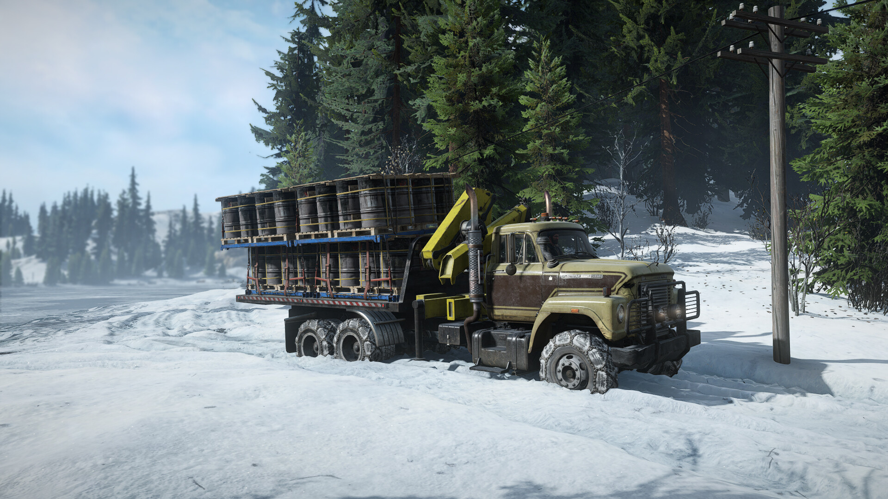
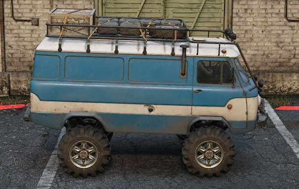
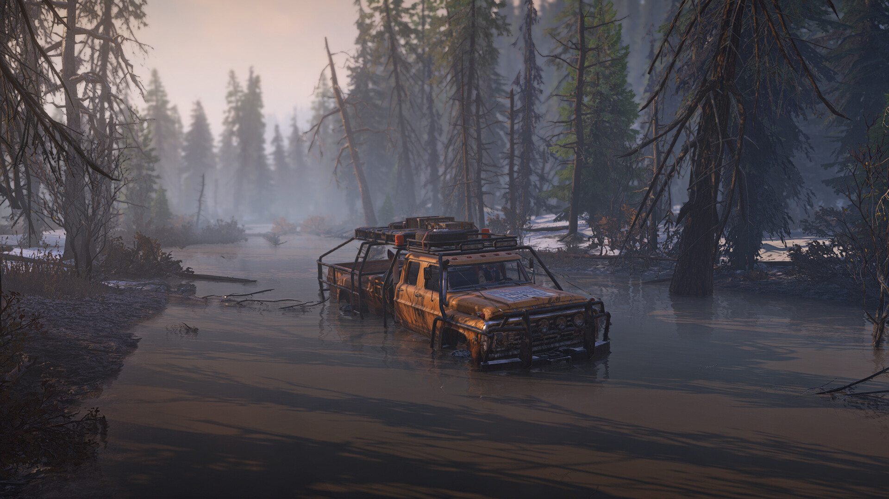
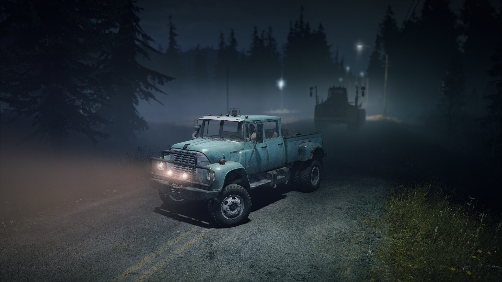
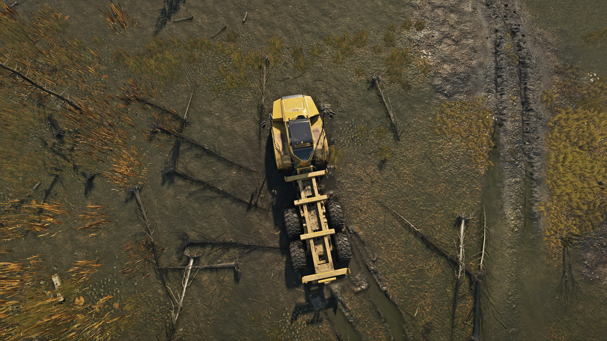
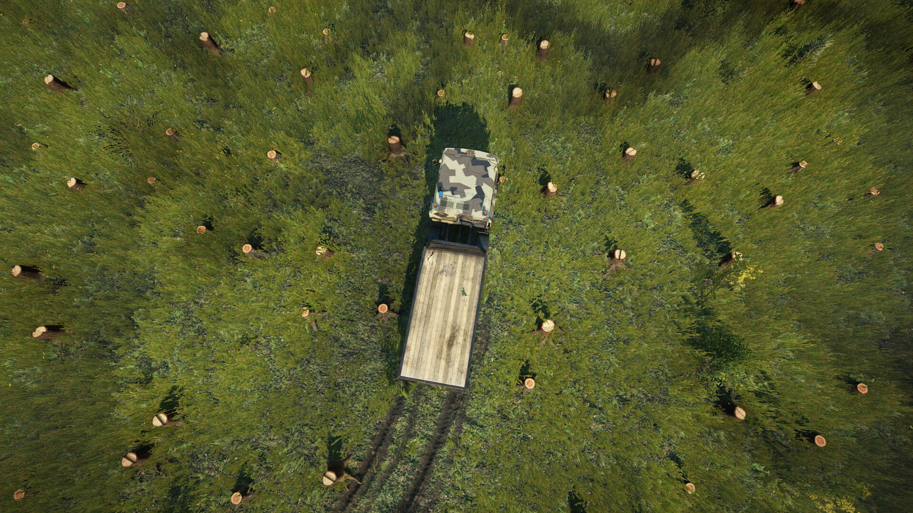
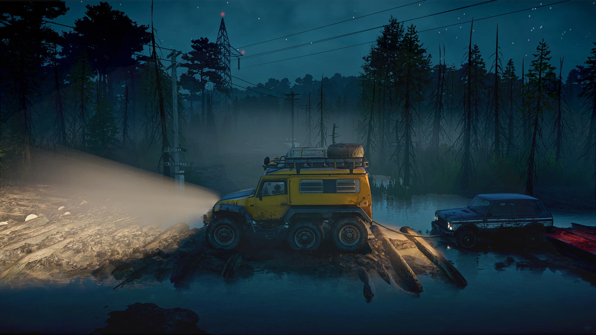
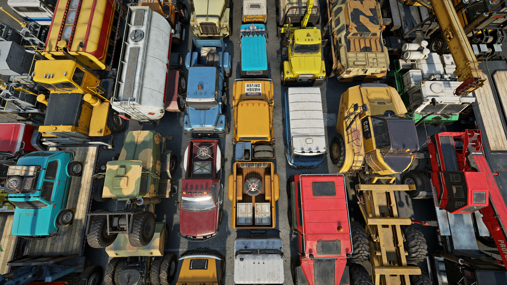

Основная информация о игре
Сюжет и задачи
В каждом регионе есть какая-то глобальная цель с определенным набором задач, известных заранее, и некоторое количество побочных миссий, которые можно получить исследуя карту. Помочь восстановить регион после паводка или запустить добычу нефти, попутно помогая местным решать насущные проблемы. На этом все. С одной стороны для подобного рода игр этого достаточно, тут все-таки важнее геймплей, с другой, даже то что есть получилось максимально обезличенным. Это просто некая условность, чтобы было чем обосновать перевозку груза из точки А в точку В.
Говоря о задачах, стоит упомянуть о наличие в игре испытаний. Часть из них раскидана по карте и выполняется на время. Оперативная доставка груза или гонка по контрольным точкам. После неспешной перевозки какой-нибудь огромной бандуры позволяет немного отвлечься. Другая часть доступна в меню игры и вот там уже придется серьезно попотеть. Довольно сложные задачи на уникальных картах, дающие в награду за прохождение косметические предметы. Особенно понравился поиск машин на «буханке» в слепую, без использования карты. Очень рекомендую. Эмоций получите не меньше, чем от основной части игры.
Визуальная часть
Возможно это не самая технически продвинутая графика своего времени, но визуальная часть тут на крайне достойном уровне. Игра действительно очень красивая. Шикарные закаты, отражения в воде и потрясающей красоты пейзажи. Порой хочется остановиться, заглушить двигатель и просто стоять и смотреть как за горизонтом садится солнце, а тени создают причудливые картины. Жаль нельзя выйти из машины и налить себе чая из термоса) В этот мир веришь и в нем хочется находится независимо от времени суток и погодных условий. Будь то дождь, слепящее солнце или густой туман.
Визуализация машин и вовсе достойна отдельной похвалы. Грузовики отлично детализированы и не выглядят «игрушечными» или «пластиковыми». Блики, потертости, следы грязи на кузове — все довольно реалистично. И радует, что разработчики не останавливаются на достигнутом периодически внедряя небольшие мелочи. В грядущем обновлении, например, обещали добавить эффект масляных пятен на воде. Кстати, на счет воды, а точнее дождя. Печально, что он не оставляет капель на машине и в целом никак не влияет на геймплей (дворники вам не понадобятся). Эффект барабанной дроби есть, но чтобы его увидеть надо прям присматриваться. Дождь тут просто косметический эффект, как собственно и снегопад. Вообще погодных эффектов хотелось бы больше, чтобы усилить чувство своей беспомощности перед силами природы. Метель, молнии с раскатами грома или штормовой ветер, под порывами которого скрипят и гнутся стволы деревьев.
В целом к графике нет серьезных претензий и вряд ли картинка кого-то разочарует. Даже на минимальных настройках игра выглядит очень достойно. Во время своих приключений только и успеваешь осматриваться по сторонам и наслаждаться красивыми пейзажами.
Геймплей и физика
Если говорить кратко, то весь смысл сводится к перевозке груза из одной точки в другую. Закинул цемент в кузов на заводе, отвез заказчику, по пути помог местным реднекам вытащить из грязи прицеп с пожитками. Но, суть кроется в том, как именно вы пройдете этот отрезок пути. Или не пройдете. Увязнете в грязи, свалитесь с обрыва или утонете в бурной реке — случится может все что угодно. Любая лужа или перепад высоты могут представлять серьезную опасность.
Snowrunner это в первую очередь превозмогание и постоянная борьба с силами природы и собственным грузовиком. Каждое задание это вызов. Каждая колея — испытание. И вроде игра медитативная, но она, странным образом, умудряется порождать довольно парадоксальный симбиоз чувств, когда вы расслаблены и нервничаете одновременно. Вот только волнительные ситуации здесь не выводят из себя, а лишь усиливают и подогревают интерес.
Что касается физики, то как я и говорил выше, ее работа не вызывает особых нареканий, а напротив достойна всяческой похвалы. Движок игры прекрасно справляется с симуляцией грязи, снега и поведением машин. И по большей части к физике у меня претензий нет.
Поломка модулей вещь более важная. На проколотых шинах далеко не уедешь, а из пробитого бензобака топливо будет улетучиваться на глазах. Это очень важная часть игры. Она подстегивает к аккуратному и вдумчивому вождению. Разбитая машина объективно ведет себя гораздо хуже. Система повреждений хоть и работает, но делает это порой довольно непредсказуемо. Сорвался со скалы, сделав по пути несколько сальто и упал на крышу? — отделался парой царапин. На скорости 20 км/ч наехал на маленький камушек, размером с грецкий орех? — прощай 50% подвески, бензобак и пара колес. Как это работает? Без понятия.
Открытый мир
Сами регионы сделаны крайне живописно и разнообразно. Огромное количество точек притяжения, сотни развилок и объездных путей. Нет проторенной дорожки от точки А к точке Б. Можно построить свой уникальный маршрут, в том числе и там, где дорог нет вовсе. Длинная объездная дорога или короткая через скалы? А может и вовсе попробовать форсировать реку в брод? Выбирать вам. Дороги в этой игре вообще вещь довольно необязательная. Всегда можно срезать через лес или, например, выбрать глубокий снег вместо грунтовки с опасным уклоном. Главное не терять бдительность и рассчитывать силы. Пытаясь сократить путь всегда есть шанс не заметить в густой траве пень или камень.
 Транспорт
Автопарк огромен и разнообразен, а при желании и вовсе стремиться к бесконечности за счет пользовательских модификаций. Глаза разбегаются от выбора и желание попробовать все и сразу, в начале игры, ограничивает лишь отсутствие денег и опыта. Каждая машина обладает своими плюсами и не побоюсь этого слова «характером». От маленького скаута до огромного карьерного тяжеловеса. И это без учета модулей, делающих транспорт узкоспециализированным. Один и тот же автомобиль может быть, заправщиком, автокраном или ремонтной мастерской. Даже пройдя всю игру, не факт что вы в полной мере успеете полноценно испытать каждую из них. Выбрать есть из чего.
